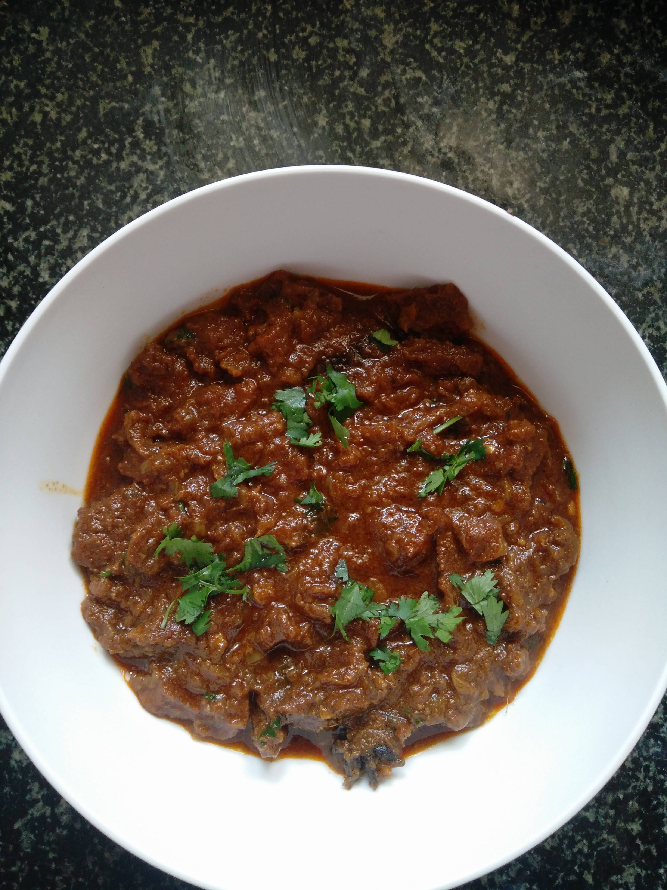

Kerala Style Spicy Beef Curry Picture Recipe
November 6, 2016

Ingredients
- Beef, sliced : 1/2 Kg (Marinated with 1/2 teaspoon salt & 1/2 teaspoon turmeric for half an hour)
- Onions, medium, sliced: 3 nos
- Spice mix
- Chilli Powder (1/2 Tablespoon)
- Turmeric Powder (1/2 Teaspoon)
- Pepper Powder (1/2 Teaspoon)
- Coriander Powder (2 Teaspoons)
- Aniseed Powder (1 teaspoon)
- Garam Masala (1/2 Teaspoon)
- Salt (1/2 Teaspoon)
* Spice Mix has to be further mixed with 1 1/2 Teaspoon of Vinegar
- Garlic, diced: 1 Tablespoon
- Ginger, diced: 1 Tablespoon
- Green Chilli, diced: 2 nos
- Tomato, medium, diced: 1
- Coriander Leaves, Curry Leaves
- Cinnamon: 1
- Cloves: 3
- Star Anise: 1

Phase 1
- Heat 2 Tablespoon oil in a pressure cooker and add the spices (not the Spice Mix).
- Once the smell of spices arise, add garlic, ginger, green chilli and curry leaves; fry until garlic and ginger begin to get burnt.
- Add tomatoes, followed by onion; saute until a light brown colour is attained.
- Add the Spice Mix, and mix throughly; fry until the mixture attains a consistency shown above.

Phase 2
- Add 1 Cup of water to the mixture.
- Check salt and add in small increments if needed.
- Wait until the mixture just about starts to boil.

Phase 3
- Add the marinated beef and mix THOROUGHLY..
- Check salt and add in small increments if needed.

Phase 4
Pressure cook (medium flame) in increments, each time checking whether the beef has become tender (I had to wait until around 15-18 whistles, checking after every 3-5 whistles). While checking after every 3-5 whistles, make sure that you turn the flame low, and let the steam settle down by itself without removing the pressure regulator (the "weight"). The Picture above was taken after the tenth whistle.

Phase 5
Once the beef has reached desired tenderness, open cook on low flame until the curry attains preferred consistency. You can even cook on low flame until barely any liquid is left behind.
Transfer the curry into a bowl and garnish with coriander leaves.